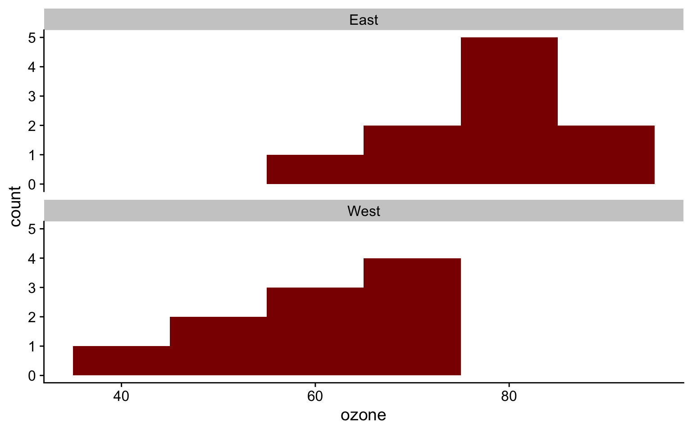
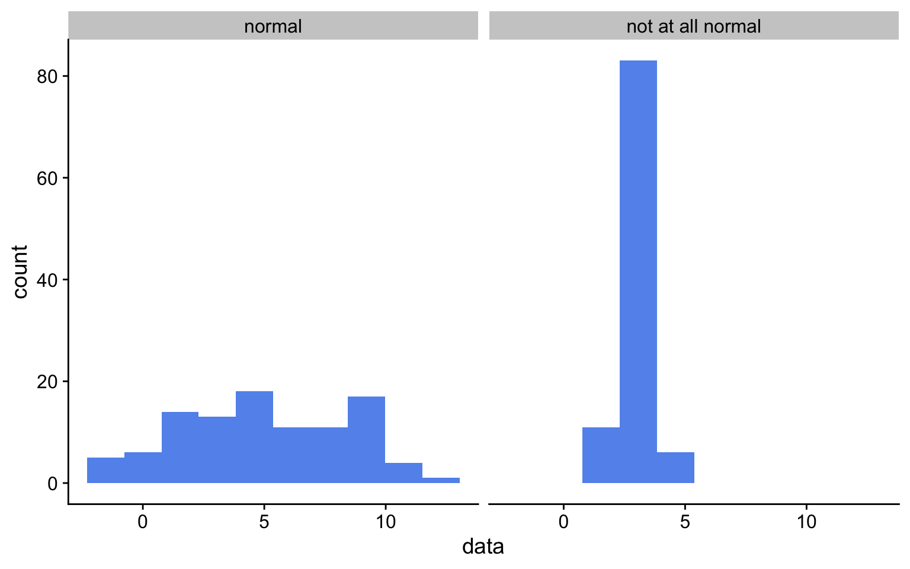
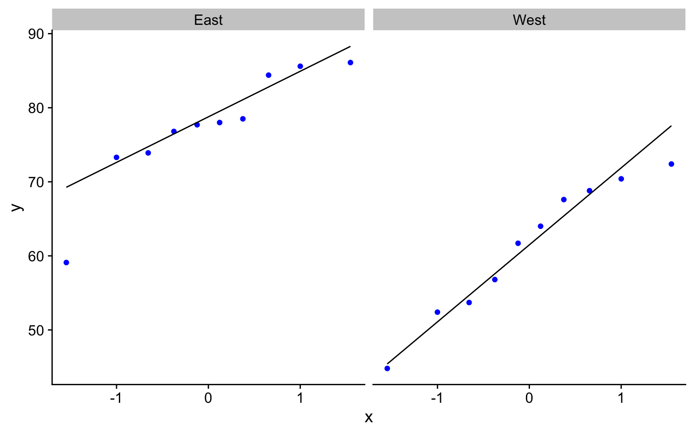

Chapter 5 t-test for difference
5.0.1 Preliminaries
In this exercise we find out how to use R to run a two-sample t-test, to determine whether there is evidence to reject the hypothesis that two samples are drawn from the same population.
The exercise is based on Chapter 5: Beckerman, Childs and Petchey: Getting Started with R.
You should have a
5.0.2 Motivation and example
In our example we will consider concentrations of airborne ozone (O3) at ground level, as measured in gardens around a city. This is of interest because ozone levels can affect how well crops grow, and can impact on human health.
We have measurements of airborne ozone levels in ppb taken at two samples of locations in the city: some randomly selected from among gardens in the eastern residential sector and some randomly selected from among gardens in the western sector, close to a zone of heavy industry.
Our question is:
Is there evidence for a difference between airborne ozone concentrations in the east and the west of the city?
From which our null hypothesis is:
There is no difference between airborne ozone concentrations in the east and the west of the city.
and our alternate, two-sided hypothesis is:
There is a difference between airborne ozone concentrations in the east and the west of the city.
5.0.3 The two-sample t-test
This can be used when we have two independent sets of numerical data, and our question is whether the data provide evidence that the sets are drawn from different populations.
5.0.3.1 Pros of the t-test
- It can be used when the data set is small.
- It can still be used when the data set is large. So…if in doubt, just use the t-test, (Kind of, the data do need to fulfil some criteria, but being few in number is fine. See below).
5.0.3.2 Cons of the t-test
- It assumes that the data are drawn from a normally distributed population. There are various ways to test if this is true, and you should try at least one of them, but with small samples, just where the t-test is most useful, it can be difficult to tell. In the end we can also appeal to reason: is there good reason to suppose that the data would or would not be normally distributed?
- When comparing the means of two samples both samples should normally have the same variance, which is a measure of the spread of the data. You need to check that this is the case, or at least have reason to suppose that it should be. (Note: in an actual t-test, it is possible to ignore this requirement - see below).
- When we have more than two samples and we use the t-test to look for a difference between any two of them, it becomes increasingly likely, the more pairs of samples we compare, that we will decide that we have found a difference because we got a p-value that was less than some pre-determined threshold (which could be anything, but is most often chosen to be 0.05) even if in reality there is none. This is the problem of high false positive rates arising from multiple pairwise testing and is where ANOVA comes in. t-tests are only used to detect evidence for a difference between two groups, not more. ANOVAs (or their non-parametric equivalent) are used when we are looking for differences between more than two groups.
5.0.4 The workflow
5.0.4.1 Open your project
Open your RStuff (or whatever you have called it) project using File/Open Project, navigating to the project folder, then clicking on the ... .Rproj file you will find there.
If your Rstuff folder is not already a Project, then make it one using File/New Project/Existing Directory - then navigate to your Rstuff folder.
5.0.4.2 Create a new script
Create a nw notebook script using File/New File/R Notebook
Delete everything from below the yaml section at the top. This is the bit between the pair of lines with three dashes. In the yaml, amend the title and add lines author: "<your name>" and date: "<the date>". Inside the quotes, add your name and the date.
Now add code chunks to carry out the steps listed below. In between the chunks, add as much explanatory text as you want so that next time you come back, you understand what each code chunk is doing. You can format this text using the simple markdown rules to be found in Help/markdown Quick Reference
5.0.4.3 Load packages
We typically include a chunk at or near the top of a script that loads any packages we are going to use. If we load all of them in this one chunk it is easy to see at a glance which ones have been loaded.
5.0.4.4 Read in and inspect the data
# there should be an 'ozone.csv' file in your data folder
# if not, you should be able to get it from the data folder on Teams or Moodle
filepath<-here("data","ozone.csv")
ozone<-read_csv(filepath)
#glimpse(ozone)What kind of data have we got?
You might also wish to inspect the data using summary(). If so, include a code chunk to do this.
5.0.5 Step One: Summarise the data
With numerical data spread across more than one level of a categorical variable, we often want summary information such as mean values and standard erros of the mean for each level. We can do this by using the group_by() and then summarise() combination. This first group the data however you want to, then calculates whatever summary you have requested for each group.
Here we will calculate the number of replicates, the mean and the standard error of the mean for both levels of garden.location ie east and west, then store the result in a data frame calle ozone.summary
ozone.summary<-ozone %>%
group_by(garden.location) %>%
summarise(n = n(),
mean.ozone = mean(ozone),
se.ozone = sd(ozone)/sqrt(n()))
ozone.summary
## # A tibble: 2 × 4
## garden.location n mean.ozone se.ozone
## <chr> <int> <dbl> <dbl>
## 1 East 10 77.3 2.49
## 2 West 10 61.3 2.87From these data, does it look as though there is evidence for a difference between ozone levels in the East and the West? Clearly, the ten gardens in the east had a higher mean ozone concentration than the ten in the west. But is this a fluke? How precisely do we think these sample means reflect the truth about the east and the west of the city? That is what the standard error column tells us. You can think of the standard error as being an estimate of how far from the true ozone concentrations for the whole of the east and the whole of the west our sample means, drawn from just ten locations in each part of the city, are likely to be.
Bottom line: the difference between the sample means is about six times the size of the standard errors of each. It really does look as thought east of the city has a higher ozone concentration than the west.
5.0.6 Step Two: Plot the data
Remember, before we do any statistical analysis, it is almost always a good idea to plot the data in some way. We can often get a very good idea as to the answer to our research question just from the plots we do.
Here, we will
- use
ggplot()to plot a histogram of ozone levels - use the
facet_wrap()function to give two copies of the histogram, one for east and one for west, and to stack the histograms one above the other. - make the histogram bins 10 ppm wide.
ozone %>%
ggplot(aes(x=ozone)) +
geom_histogram(binwidth=10,fill="darkred")+
facet_wrap(~garden.location,ncol=1) +
theme_cowplot()
Instead of histograms, we could have drawn box plots:
ozone %>%
ggplot(aes(x=garden.location,y=ozone))+
geom_boxplot()+
labs(x="Garden Location",
y="Ozone concentration (ppb)") +
theme_cowplot()
or as a dot plot with standard errors of the mean included:
# for this chart we will use the summary table that we created above.
ozone.summary %>%
ggplot(aes(x=garden.location,y=mean.ozone))+
geom_point(size=3) +
geom_errorbar(aes(ymin=mean.ozone-se.ozone,ymax=mean.ozone+se.ozone),width=0.1)+
ylim(0,100) + # try leaving this line out. What happens? Which is better?
labs(x="Garden Location",
y="Ozone concentration (ppb)",
caption="The data points show mean values, the error bars show plus or minus one standard error of the mean ") +
theme_cowplot()
Do the data look as though they support the null hypothesis or not?
In addition, do the data look as though each group is drawn from a normally distributed population? One of the types of graphs gives you no indication of that while the other two do. Which is the odd one out? Even when looking at the other two figures, when there are so few data it’s kind of hard to tell, no?
Let’s now do some stats.
5.0.7 Step Three: Carry out statistical analysis
5.0.7.1 Are the data normally distributed?
We can go about establishing this in three ways: using an analytical test of normality, using a graphical method and by thinking about what kind of data we have. Let’s consider these in turn.
5.0.7.2 Normality test - analytical method
There are several analytical tests one can run on a set of data to determine if it is normally distributed. One is the Shapiro-Wilk test.
For more information on the Shapiro-Wilk test, type ?shapiro.test into the console window. For kicks, try it out on the examples that appear in the help window (which is the bottom right pane, Help tab). One example is testing a sample of data that explicitly is drawn from a normal distribution, the other tests a sample of data that definitely is not. What p-value do you get in each case? How closely do the histograms of each sample resemble a normal distribution?
#first we create a data frame containing the two example data sets
example1<-rnorm(100, mean = 5, sd = 3) # first example from the help pane
example2<-runif(100, min = 2, max = 4) # second example from the help pane
df<-tibble(data=c(example1,example2), distribution=c(rep("normal",100),rep("not at all normal",100)))
# then we plot a histogram of each data set
ggplot(df,aes(x=data)) +
geom_histogram(bins=10,fill="cornflowerblue") +
facet_wrap(~distribution) +
theme_cowplot()
# and finally we run a Shapiro-Wilk normality test on each data set
shapiro.test(example1) # 100 samples drawn from a normally distributed population
##
## Shapiro-Wilk normality test
##
## data: example1
## W = 0.97693, p-value = 0.07639
shapiro.test(example2) # 100 samples drawn from a uniformly (ie NOT normally) distributed population
##
## Shapiro-Wilk normality test
##
## data: example2
## W = 0.93248, p-value = 6.897e-05For the examples above, we see that Shapiro-Wilk test gave a hig p-value for the data that we knew were drawn from a normal distribution, an a very low p-value for the data that we knew were not.
The Shapiro-Wilk test tests your data against the null hypothesis that it is drawn from a normally distributed population. It gives a p-value. If the p-value is less than 0.05 then we reject the null hypothesis and cannot suppose our data is normally distributed. In that case we would have to ditch the t-test for a difference, and choose another difference test in its place that could cope with data that was not normally distributed.
Why don’t we do that in the first place, I hear you ask? Why bother with this finicky t-test that requires that we go through the faff of testing the data for normality before we can use it? The answer is that it is more powerful than other, so-called non-parametric tests that can cope with non-normal data. It is more likely than they are to spot a difference if there really is a difference. So if we can use it, that is what we would rather do.
So, onwards, let’s do the Shapiro-Wilk test on our data
We want to test each garden group for normality, so we group the data by location as before and and then summarise, this time asking for the p-value returned by the Shapiro-Wilk test of normality.
ozone %>%
group_by(garden.location) %>%
summarise('Shapiro-Wilk p-value'=shapiro.test(ozone)$p.value)
## # A tibble: 2 × 2
## garden.location `Shapiro-Wilk p-value`
## <chr> <dbl>
## 1 East 0.0953
## 2 West 0.599For both groups the p-value is more than 0.05, so at the 5% significance level we cannot reject the null hypothesis that the data are normally distributed, so we can go on and use the t-test. Yay!
5.0.7.3 Graphical methods - the quantile-quantile or QQ plot.
Confession: I don’t normally bother with numerical tests for normality such as Shapiro-Wilk. I usually use a graphical method instead.
For an overview of how normally distributed and non-normally distributed data looks when plotted in histograms, box plots and quantile-quntile plots, see this review
We have already seen two ways of plotting the data that might help suggest whether it is plausible that the data are drawn from normally distributed populations. Histograms and box plots both indicate how data is distributed, and for normally distributed data both would be symmetrical. Well, they would be, more or less, if the data set was large enough but for small data sets it can be quite hard to tell from either type of plot whether the data are drawn from a normally distributed population.
A better type of plot for making this judgement call is the quantile-quantile or ‘QQ’ plot which basically compares the distribution of your data to that of a normal distribution. If your data are approximately normally distributed then a qq plot will give a straight(-ish) line. Even with small data sets, this is usually easy to spot.
ozone %>%
ggplot(aes(sample=ozone)) +
stat_qq(colour="blue") +
stat_qq_line() +
facet_wrap(~garden.location) +
theme_cowplot()
Nothing outrageously non-linear there, so that also suggests we can safely use the t-test.
5.0.7.4 The ‘thinking about the data’ normality test
As you might have guessed, this isn’t a test as such, but a suggestion that you think about what kind of data you have: is it likely to be normally distributed within its subgroups or not? If the data are numerical values of some physical quantity that is the result of many independent processes, and if the data are not bounded on either side (say by 0 and 100 as for exam scores) then it is quite likely that that they are. If they are count data, or ordinal data, then it is quite likely that they are not.
This way of thinking may be all you can do when data sets are very small and any of the more robust tests for normality presented here leave you not much the wiser.
5.0.7.5 Now for the actual two-sample t-test
So, it looks as though it is plausible that the data are drawn from normal distributions. That means we can go on to use a parametric test such as a t-test and have confidence in its output.
We can use the t.test() function for this. This needs to be given a formula and a data set as arguments. Look up t.test() in R’s help documentation, and see if you can get the t-test to tell you whether there is a significant difference between ozone levels in the east and in the west of the city.
t.test(ozone~garden.location,data=ozone)
##
## Welch Two Sample t-test
##
## data: ozone by garden.location
## t = 4.2363, df = 17.656, p-value = 0.0005159
## alternative hypothesis: true difference in means between group East and group West is not equal to 0
## 95 percent confidence interval:
## 8.094171 24.065829
## sample estimates:
## mean in group East mean in group West
## 77.34 61.26ozone %>% t_test(ozone~garden.location)
## # A tibble: 1 × 8
## .y. group1 group2 n1 n2 statistic df p
## * <chr> <chr> <chr> <int> <int> <dbl> <dbl> <dbl>
## 1 ozone East West 10 10 4.24 17.7 0.000516Note the ~ tilda symbol. This means ‘is a function of’. So this line means: do a t-test to see if there is a significant difference between the ozone levels in the two garden locations.
5.0.7.6 Interpret the output of the t-test.
Study the output of the t-test.
- What kind of test was carried out?
- What data was used for the test?
- What is the test statistic of the data?
- How many degrees of freedom were there? Does the number make sense? In a t-test the ’degrees of freedom is one less than the number of data points.
- What is the p-value?
- What does the p value mean?
- What is the confidence interval for the difference between ozone levels in east and west? Does it encompass zero?
- Is there sufficient evidence to reject the null hypothesis?
- What does the word ‘Welch’ tell you - look it up in the help for
t.test().
5.0.8 The complete script
Here is a minimal script you could use to run a t-test on the ozone data:
Capy this and save it as a
# my name
# the date
# Brief description of what the script is for
# load the packages we need
library(tidyverse)
library(here)
library(cowplot)
# load the data
ozone<-read_csv(here("data","ozone.csv"))
glimpse(ozone)
# plot histograms for each location
ggplot(ozone,(aes(x=ozone)))+
geom_histogram(binwidth=10,fill="darkred")+
facet_wrap(~garden.location,ncol=1) +
theme_bw()
# what are the means and standard deviations of ozone levels for each location?
ozone %>%
group_by(garden.location) %>%
summarise(avg = mean(ozone),st_dev=sd(ozone))
# are the ozone levels in each location normally distributed?
ozone %>%
group_by(garden.location) %>%
summarise(sw=shapiro.test(ozone)$p.value)
# graphical check for normality:
# quantile-quantile plots for ozone levels in each location
ozone %>%
ggplot(aes(sample=ozone)) +
stat_qq(colour="blue") +
stat_qq_line() +
facet_wrap(~garden.location) +
theme_bw()
# and finally, the actual _t_-test
t.test(ozone~garden.location,data=ozone)